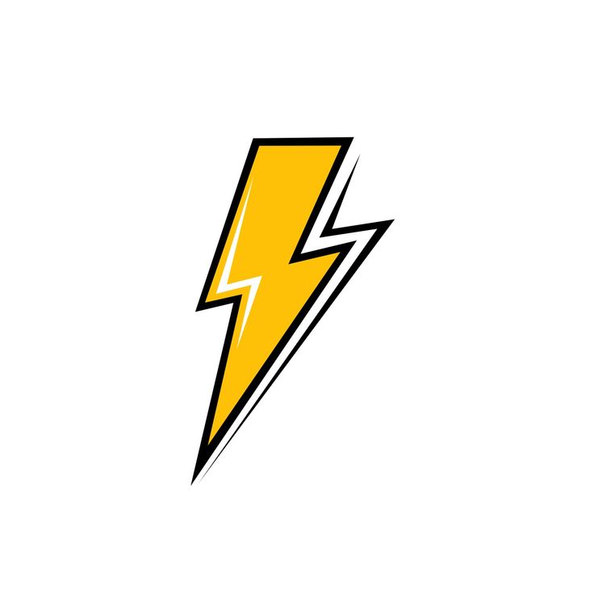

Layanan Unggulan Kami

Cuci Kiloan
Praktis dan ekonomis untuk cucian harian Anda. Ikon mesin cuci ini akan berputar saat Anda mengarahkan kursor!

Cuci Satuan
Pembersihan khusus untuk pakaian berbahan sensitif seperti jas, kebaya, atau gaun pesta kesayangan Anda.

Kilat & Ekspres
Butuh pakaian bersih dalam waktu singkat? Layanan kilat 3 jam kami siap menjadi penolong instan Anda.